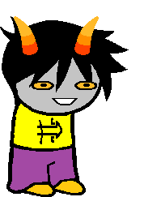
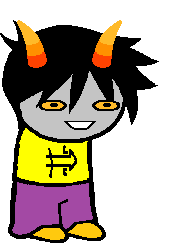

Prince of Time
Full name: Osamco Negtiv
Trolltag: cleverDouchebag
Quirk: thE quiCk bRown fox jumps oVER thE Lazy dog!
#FF0080
Session: Trollplay
Modus: Sanity Modus
(The less sane he is, the more cards open up on a scale of 1-20.)
Strife Specibus: 2XScytheswordkind
Server: Litl_E
Client: Litl_E
Matesprit: N/A
Kismisis: N/A
Morail: Litl_E Postiv
Auspistice: N/A
Notes 1:
- Litl_E once explained to Osamco What would happen if an unstoppable force hit an immovable object. Osamco understood none of it, and is now afraid of ham.
- Alpha version of Ante.
- Was originally the Maid of Orb, but changed his past selves classpect to make the session winnable.
- Has omnipotence due to a deal With his denizen, that also made him stupid.
Notes 2:
- Easy to trap in boxes.
- Don't make a joke about your head being empty around him.